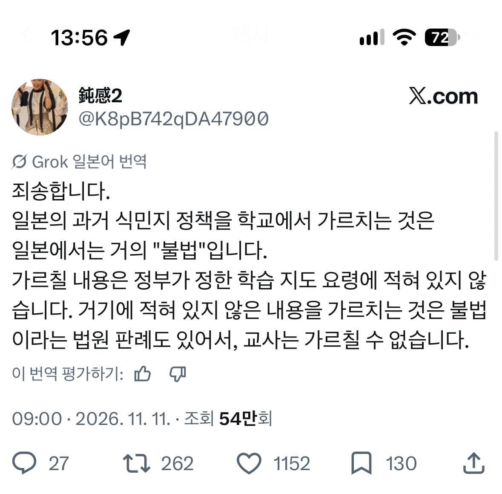

교육이 진짜 불법이였구나
우리도 저렇게 될 뻔했자너 ㅋㅋㅋ
시조새 없어진거?
출판물에 한국의 독립과 관련된 단어나 문장 들어가도 유통 불가
얍 ㅋ
ㄷㄷ

모를만하네..
이게왜 진짜임
띠용 진짜 불법이였네;;
좋게보면 수업중에 환빠교육같은 개소리 못하게하는 효과가 있긴한데..
학계에 맡기는 이유가 있다.
단번에 이해가 됐어요 톤
알게 되면 공동체사회 유지가 안 된다고 판단햇나봄
옛날에도 저게 필요했음
그러면 학교 학원선생한테 세뇌당한 영포티들이 생산 안 됐을텐데
그래서 세뇌 안 당한 일뽕들이 그렇게...!
세뇌 안 당함 (유튜브 찌라시들은 믿으며)
법률상 수도 없는 나라
그래서 원피스 스토리가 나오는건가? 공백의 100년
불법으로 폐기되는 책들이 살아남으면 포네그리프가 되는거고
오하라 조지기에 누구보다 적극적이었던 사카즈키는 딱봐도 일본색이 짙은 캐릭터, 남들은 미화시키기에 진심인 닌자 사무라이를 세상 좆같이 그려낸 와노쿠니편
일리는 있군
그리고 주인공 산하조직으로 등장하는 거북선....흠...
영국, 프랑스, 네덜란드, 스페인 같은데서는할까?
와 씹 ㅋㅋㅋ
아니 왜 진짜에요
일본은 교육이 불법입니까? (팩트)